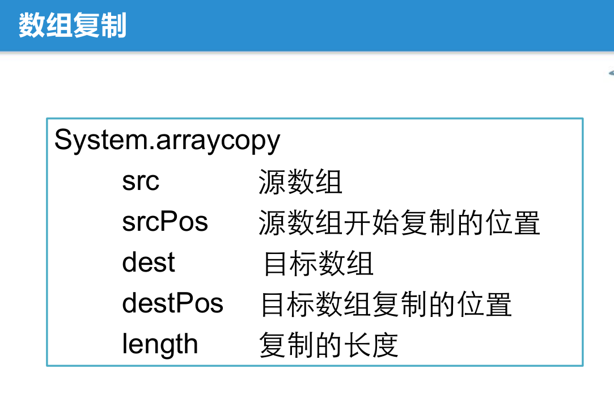

数组复制：
1.System.arraycopy(arr1，0，arr2，0，5);
其中各个位置的参数的含义见下表：

2. 某个具体的数组.clone()
如下两图中,数组arr4[]直接克隆数组arr[]的全部内容。


3.Arrays.copyOf(待复制的数组, 新数组的length)。具体见下面Arrays工具类的介绍。
程序包：
java.lang 基础类库(如System和String等,都是编译器自动找的)
java.util 工具类，集合 (如Scanner类、 Arrays类等)
java.math 数学
java.text 格式化 (printf和format等)
------------------------------------------------------------------------------------------------------------------------------------------------------------------------
工具类：Arrays
方法:
toString
sort
binarySearch
equals
fill
copyOf
应用举例: (说明:这些方法若是对数组的指定范围进行操作的话都是指左闭右开的区间, 即只包括起始位置不包括终止位置, 详情见排序Arrays.sort处的说明)


--------------------------------------------------------------------------------------------------------------------------------------------------------------------------
空类型null
和true和false一样是一种字面值
应用举例:
正常的数组类型输出数组名的话的输出结果是一个地址,而空数组就是空

输出结果如下:

--------------------------------------------------------------------------------------------------------------------------------------------------------------------------
退出虚拟机

--------------------------------------------------------------------------------------------------------------------------------------------------------------------------
图书管理系统1.0的实现(具体见E:\学习资料\19光环国际大数据\1.javase\day06\day6下午笔记和代码\day6\ArrayBookDemo3.java)
两个本地地址里的东西是一样的

实现图:

--------------------------------------------------------------------------------------------------------------------------------------------------------------------------
多维数组
在java中,多维数组实际上就是由一个个一维数组组成的, 其实多维数组在内存中都是按照一个个的一维数组的方式存储的,是通过多次索引(引用)的方式实现的
二维数组
举一个例子说明二维数组在内存中的存储方式
用以下这个二维数组为例


动态初始化：
int[][] arr = new int[3][2];
静态初始化：
int[][] arr = {{12,2},{5,8},{14,12}};
int[][] arr1 = new int[][]{{12,2},{5,8},{14,12}};
二维数组的赋值和遍历
首先是用静态初始化方式进行赋值

其次是利用动态初始化进行赋值以及对数组进行遍历
注意一下列循环时求二维数组列长度的技巧

也可以用增强for输出, 注意两个增强for的循环条件里的变量的差别

-------------------------------------------------------------------------------------------------------------------------------------------------------------------------
不规则数组：
假设要定义一个不规则的二维数组如下

首先,在定义了一个不规则数组时,只定义了行数没有定义列数时,输出每行的数据索引时是null, 说明还没有给二维数组的每列在堆里开辟地址空间, 只给行开辟了空间(或者说,说明还没有开辟二维数组里存储具体数据的各个一维数组, 只开辟了一个用来索引的一维数组)。定义和在内存中的空间开辟情况见如下两图


接下来要先为该二维数组的每一行开辟空间 ,才能给该二维数赋值, 否则直接赋值只会报空指针异常。
定义每行的长度的方式如下图

此时内存中的空间开辟情况如下:(系统自动给还没赋值的数组赋上默认值)

接下来只需要按照原先的 给二维数组赋值的方法 赋值即可
上述是用动态初始化的方法进行定义不规则数组的,下面展示一下动态初始化和静态初始化的比较

-------------------------------------------------------------------------------------------------------------------------------------------------------------------------
杨辉三角可以用不规则数组来实现
先把杨辉三角的等腰三角形形状变成直角三角形形状

代码实现

-------------------------------------------------------------------------------------------------------------------------------------------------------------------------
多维数组
例如三维数组:
int[][][] arr = new int[2][3][4];
其在内存中的存储如图(不完整图):
可以看出多维数组在内存中的存储方式其实都是一维数组, 只是存储结构有点类似于索引而已